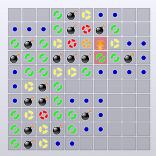

This is an HTML5 clone of Mine Sweeper, the classic puzzle game. Clicking on a square reveals whether there is a mine underneath. If not, the number of adjacent mines is shown.
You can choose from four difficulty levels: easy, normal, hard and extreme. Start playing the easy level, then go on with normal and if you're good enough, play rough!
Also, the field size is variable. You can choose from 6x6 squares to 16x16 ones. The larger the field size, the higher the score. Simple, huh?
The game features three styles. The third one makes the game special: Instead of numbers, circles indicate the number of adjacent mines.